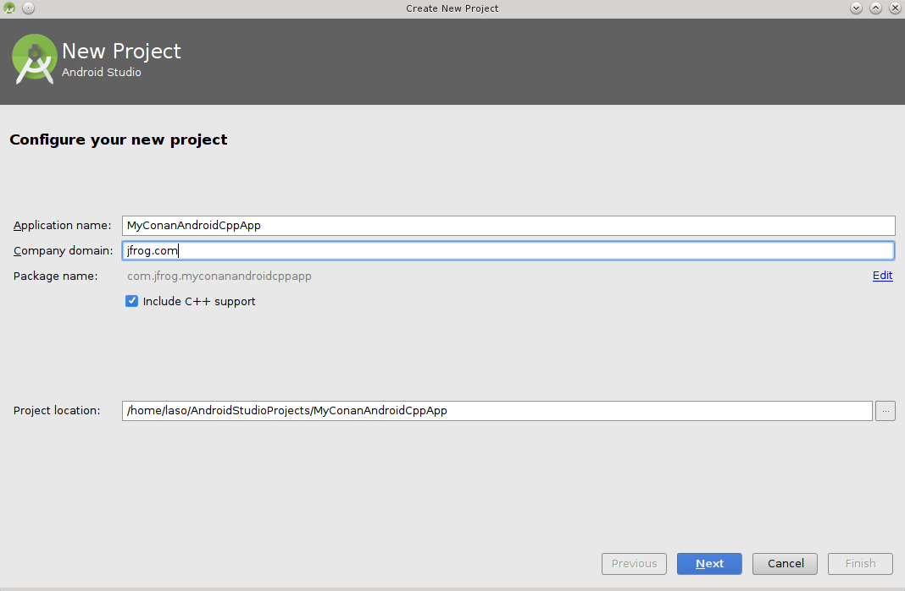
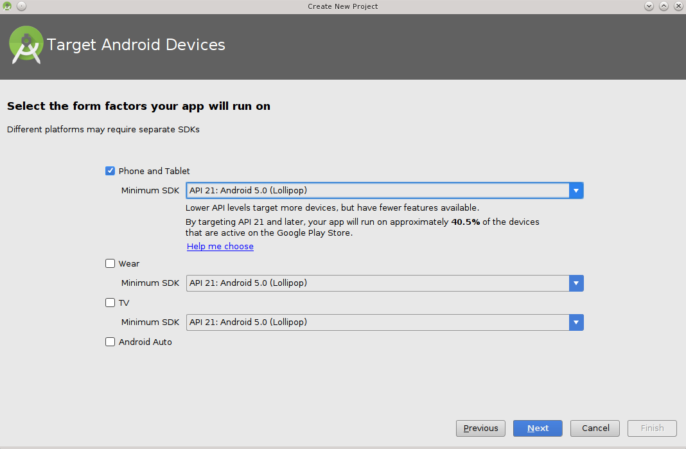

Android Studio
Android Studio
You can use Conan to cross-build your libraries for Android with different architectures. If you are using Android Studio for your Android application development, you can integrate Conan to automate the library building for the different architectures that you want to support in your project.
Here is an example of how to integrate the libpng Conan package library in an Android application, but any library
that can be cross-compiled to Android could be used using the same procedure.
We are going to start from the 「Hello World」 wizard application and then will add it the libpng C library:
Follow the cross-build your libraries for Android guide to create a standalone toolchain and create a profile named
android_21_arm_clangfor Android. You can also use the NDK that the Android Studio installs.Create a new Android Studio project and include C++ support.

3. Select your API level and target. The arch and api level have to match with the standalone toolchain created in step 1.

Add an empty Activity and name it.


Select the C++ standard

6. Change to the project view and in the app folder create a conanfile.txt with
the following contents:
conanfile.txt
[requires]
libpng/1.6.23@lasote/stable
[generators]
cmake
Open the
CMakeLists.txtfile from the app folder and replace the contents with:
cmake_minimum_required(VERSION 3.4.1)
include(${CMAKE_CURRENT_SOURCE_DIR}/conan_build/conanbuildinfo.cmake)
set(CMAKE_CXX_COMPILER_VERSION "5.0") # Unknown miss-detection of the compiler by CMake
conan_basic_setup(TARGETS)
add_library(native-lib SHARED src/main/cpp/native-lib.cpp)
target_link_libraries(native-lib CONAN_PKG::libpng)
8. Open the app/build.gradle file. We are configuring the architectures we want to build, specifying adding a new task conanInstall
that will call conan install to install the requirements:
In the defaultConfig section, append:
ndk {
// Specifies the ABI configurations of your native
// libraries Gradle should build and package with your APK.
abiFilters 'armeabi-v7a'
}
After the android block:
task conanInstall(type: Exec) {
executable "conan" // on MacOSX may need to specify the absolute path, i.e. `/usr/local/bin/conan`
args = ["install", "conanfile.txt",
"--profile=android_21_arm_clang",
"--install-folder=${new File("conan_build").tap { mkdirs() }}",
"--build=missing"]
standardInput = System.in
}
Make your Android build depend on the NDK build, so Conan install is called each time you’re building the Android app. In the same .gradle file:
preBuild.dependsOn conanInstall
Finally open the default example cpp library in
app/src/main/cpp/native-lib.cppand include some lines using your library.
Be careful with the JNICALL name if you used another app name in the wizard:
#include <jni.h>
#include <string>
#include "png.h"
#include "zlib.h"
#include <sstream>
#include <iostream>
extern "C"
JNIEXPORT jstring JNICALL
Java_com_jfrog_myconanandroidcppapp_MainActivity_stringFromJNI(
JNIEnv *env,
jobject /* this */) {
std::ostringstream oss;
oss << "Compiled with libpng: " << PNG_LIBPNG_VER_STRING << std::endl;
oss << "Running with libpng: " << png_libpng_ver << std::endl;
oss << "Compiled with zlib: " << ZLIB_VERSION << std::endl;
oss << "Running with zlib: " << zlib_version << std::endl;
return env->NewStringUTF(oss.str().c_str());
}
Build your project normally. Conan will create a conan folder with a folder for each different architecture you have specified in the abiFilters with a conanbuildinfo.cmake file.
Then run the app using an x86 emulator for best performance:

也參考
Check the section Linux/Windows/macOS to Android to read more about cross-building for Android.